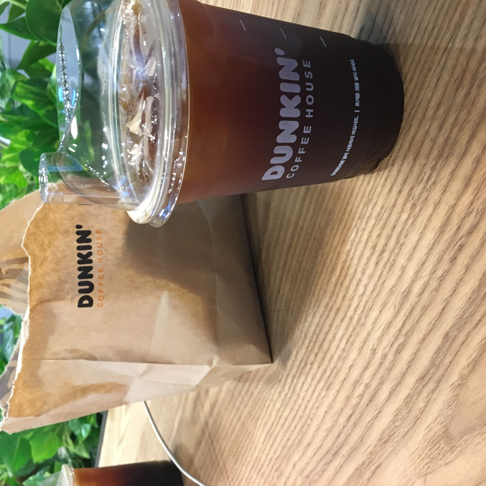
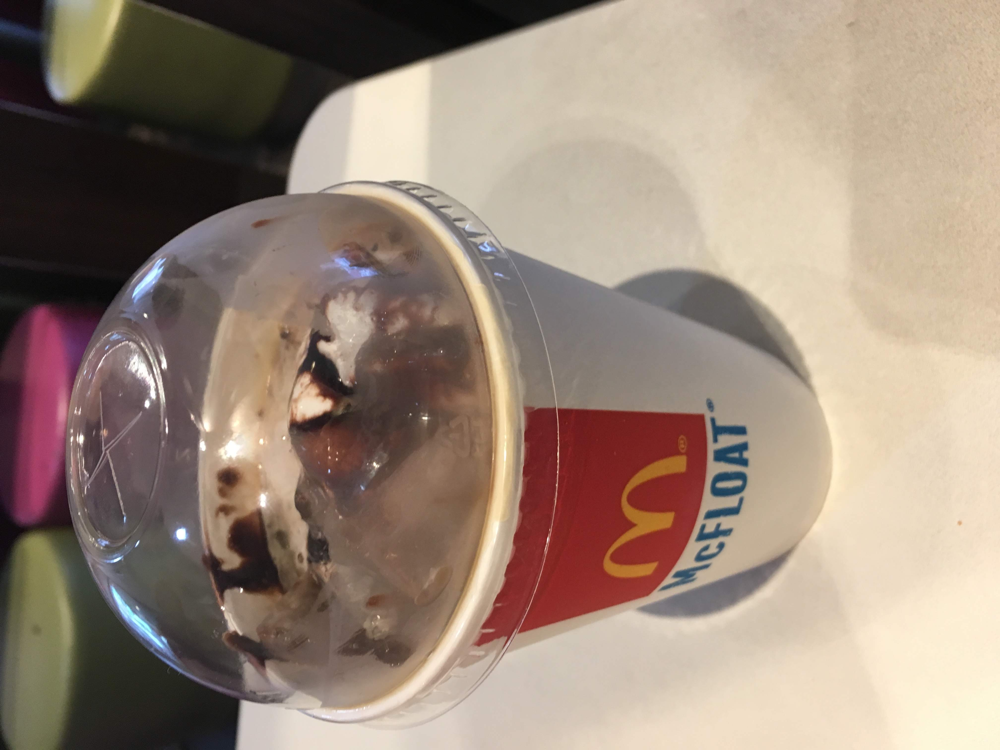
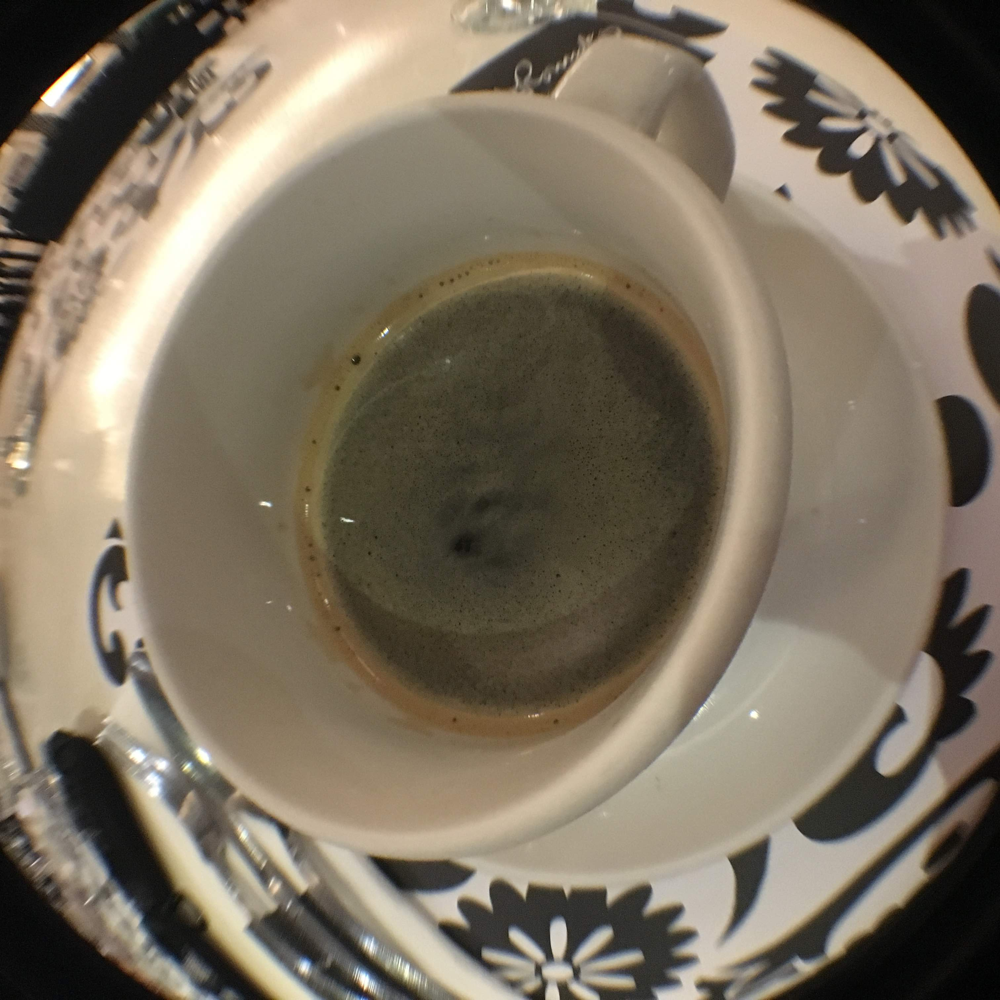
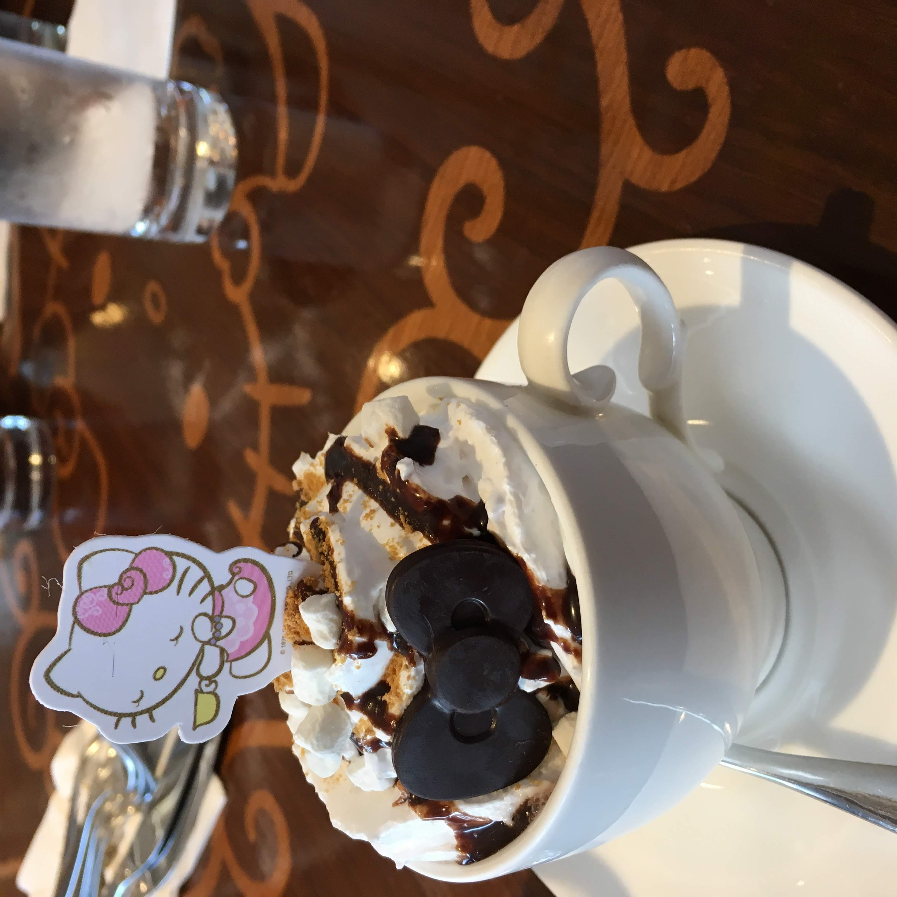
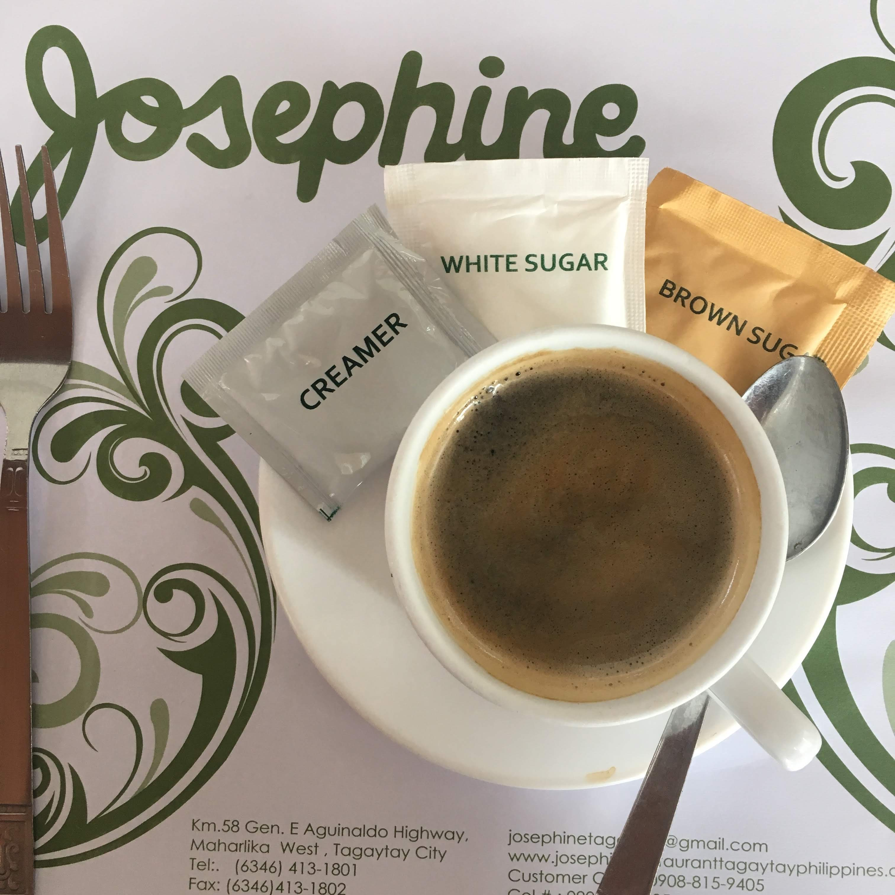
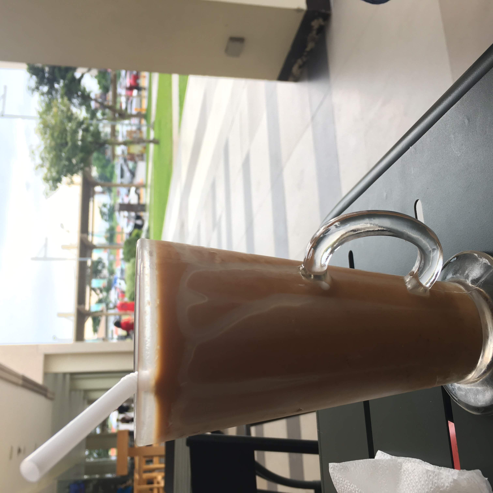
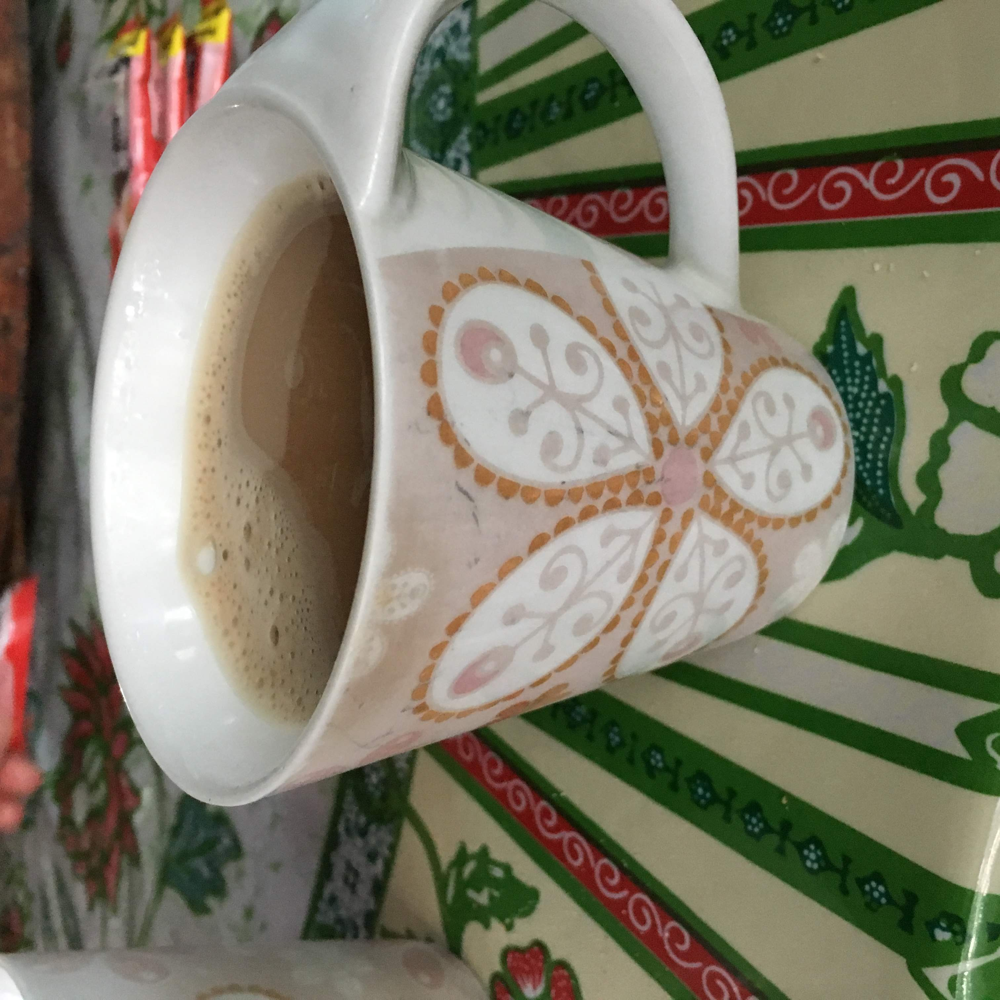

Iced Coffee, Dunkin Donuts, Incheon Airport, South Korea
September 5, 2018 – It takes over 12 hours to fly from San Francisco to Incheon Airport. Despite having two coffees and intermittent sleep on the plane, landing on the other side of the international dateline at 2 a.m. is a recipe for needing more coffee. I was excited to use a Dunkin Donuts gift card I had been carrying since 2015. Unfortunately, it was only valid in the States.
Rating: 6/10 Consumed out of necessity, but overall underwhelming

McFloat, McDonald's, Cubayao, Philippines
September 8, 2018 – We woke up early to watch the sun rise over Laguna Lake. On the way back to my uncle's house, my mother asked my cousin where we could get coffee.
"McDo, po."
McDonald's
The McFloat was like a dressed up affogato. Clearly intended as a dessert, the staff appeared shocked when I ordered the McFloat before 7 a.m.
Rating: 3/10 I'm lactose intolerant. This was a bad decision, but it was a good bad decision.

Double Espresso, Romulo Cafe, Makati, Philippines
September 9, 2018 – On this whirlwind trip, I was seeing relatives almost every day. This was a small reunion of maybe a few dozen cousins and second cousins, some of whom I'd never met. I ordered an espresso because jetlag isn't a good look.
Rating: 8/10 At least I don't think anyone noticed I was exhausted...

S'mores Latte, Hello Kitty Cafe, Metro Manila, Philippines
September 9, 2018 – This stop was as much for my sister as it was for me. She loves Hello Kitty; I love coffee. The cafe was decked out in pastel colors. The iconic cat was on every surface. The bakery case was filled with colorful pastries and cakes. We sat in a booth topped with a giant gold bird cage.
My nephew ordered a belgian biskie, my sister ordered a profiterole, my cousins shared a plate of salted egg fries, and I ordered this s'mores latte.
Rating: 5/10 Presentation was amazing, but the flavor was lacking.

Caffe americano, Josephine, Tagaytay, Philippines
September 10, 2018 – My tita and tito took my mother, sister and I for brunch at a restaurant with a view of the world's largest island within a lake on an island within a lake within an island – Taal. Prior to January 2020, Taal had been relatively dormant since the '70s.
Rating: 6/10 Really cool view of Taal, really basic coffee.

Thai Iced Coffee, Santa Rosa, Philippines
September 10, 2018 – After a day at the beach and stopping for nun-made sweets made at Bahay Pastulan Store, we visited a mall to rest and snack some more. My nephew played on the playground while we sat outside and had drinks and ate ube dimples. Thai iced coffee is always good, but I am always lactose intolerant.
Rating: 9/10 Had a great day and this coffee was worth the discomfort.

Nestlé Instant Coffee, Ate Desi's, Biñan, Philippines
September 12, 2018 – Near the end of my trip, my mother and I walked to visit my lolo's cousin, Ate Desi. At over 80 years old, she says she's too young to be a tita or a lola – Filipino kinship terms to refer to women of your parents' or grandparents' generations, respectively. She quizzed me on Tagalog words I knew. My mother translated the words I didn't understand. We sat outside and ate sweet bread while my mother and her cousin discussed the garden with Ate Desi. My mother asked me to take a picture of the four of us, to which Ate Desi spat:
"Pangit ko."
"I'm ugly."
Rating: 12/10 This coffee was really about experience, not the taste.